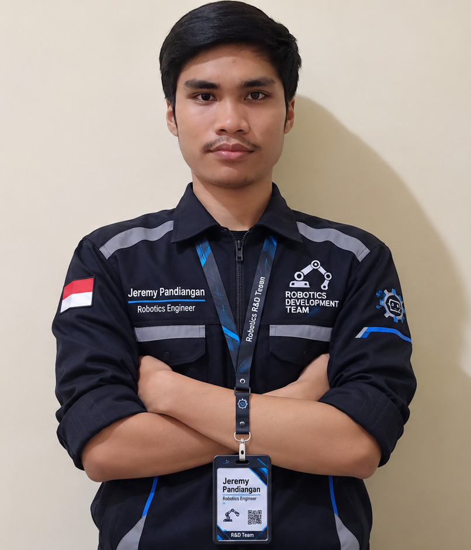

Deteksi Tumpahan
Menggunakan kamera ESP32-CAM dan model AI untuk membantu mengidentifikasi tumpahan cairan pada lantai.
SmartMop merupakan sistem robot pembersih lantai pintar yang dirancang untuk mendeteksi tumpahan cairan menggunakan Internet of Things (IoT) dan membantu proses pembersihan lantai secara otomatis.
Menggunakan kamera ESP32-CAM dan model AI untuk membantu mengidentifikasi tumpahan cairan pada lantai.
Robot dirancang untuk melakukan proses pembersihan pada area yang terdeteksi mengalami tumpahan.
Website menyediakan antarmuka untuk memantau kondisi sistem, kamera, dan aktivitas robot.
SmartMop menggabungkan perangkat keras, kecerdasan buatan, dan teknologi web.
Tim yang berkontribusi dalam perancangan dan pengembangan sistem SmartMop.

Tim Pengembang SmartMop
Tim Pengembang SmartMop
Tim Pengembang SmartMop